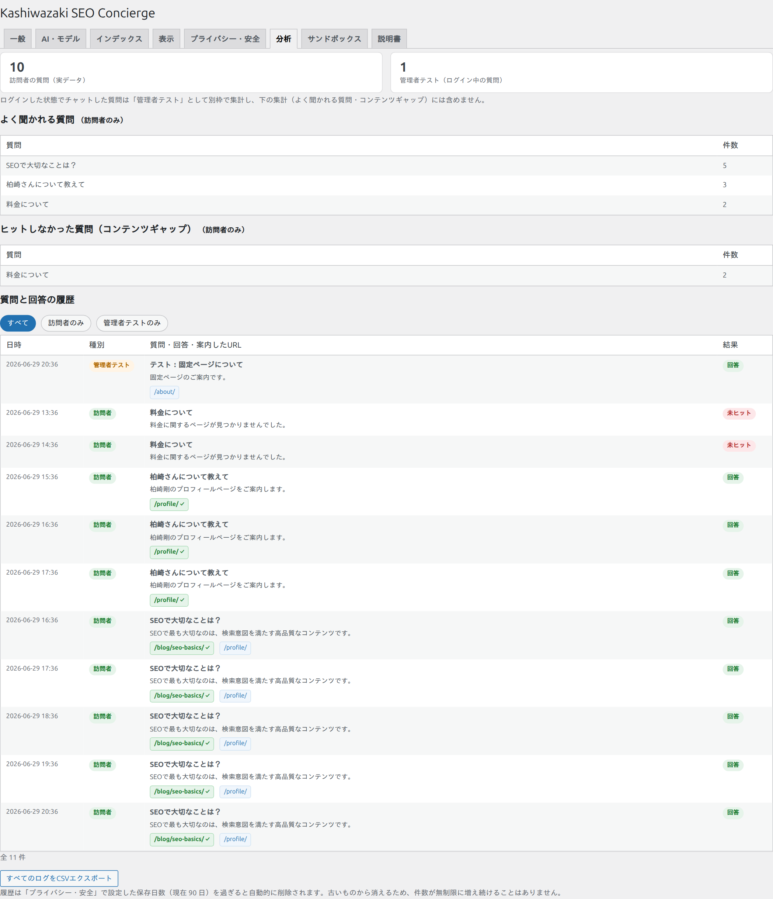

分析
「分析」タブでは、訪問者がどんな質問をして、どのページが案内されたかを確認できます。これを見れば「足りないコンテンツ」や「人気のテーマ」が分かり、サイト改善に役立ちます。

訪問者の質問と「管理者テスト」を分けて集計
あなた自身がログインした状態でチャットを試した質問は「管理者テスト」として別枠で数えられ、訪問者の集計（人気質問・コンテンツギャップ）には含まれません。これにより、あなたの動作確認が実際の利用データを汚すことがありません。画面上部のカードに「訪問者の質問」と「管理者テスト」の件数が別々に表示されます。
3つの集計
よく聞かれる質問
訪問者から多かった質問の上位。ニーズの高いテーマが分かります。
ヒットしなかった質問
適切なページを案内できなかった質問（コンテンツギャップ）。次に作るべき記事のヒントになります。
質問と回答の履歴
日時・種別・質問・回答・案内したURL・結果を一覧。20件ごとにページ送りできます。
履歴の見方
| 列 | 説明 |
|---|---|
| 日時 | 質問が行われた日時。 |
| 種別 | 訪問者（実データ）か 管理者テスト（ログイン中のあなた）かを色付きで表示。 |
| 質問・回答・案内したURL | 訪問者の質問、ボットの回答、案内した候補ページ。訪問者が実際にクリックしたURLには緑の「✓」が付きます。 |
| 結果 | 回答（案内できた）か 未ヒット（該当なし）か。 |
CSVエクスポート
「すべてのログをCSVエクスポート」を押すと、履歴をCSVファイルとしてダウンロードできます。スプレッドシートなどで詳しく分析したいときに使います。
履歴は「プライバシー・安全」で設定した保存日数を過ぎると自動的に削除されます。古いものから消えるため、件数が無制限に増え続けることはありません。
活用のヒント：「ヒットしなかった質問」に同じテーマが何度も出てくるなら、それは訪問者が求めているのに用意できていない情報です。その記事を新しく作り、索引を再構築すれば、次からはきちんと案内できるようになります。